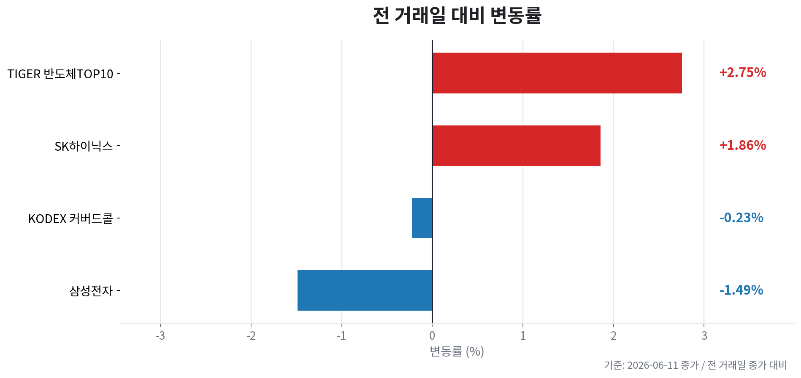
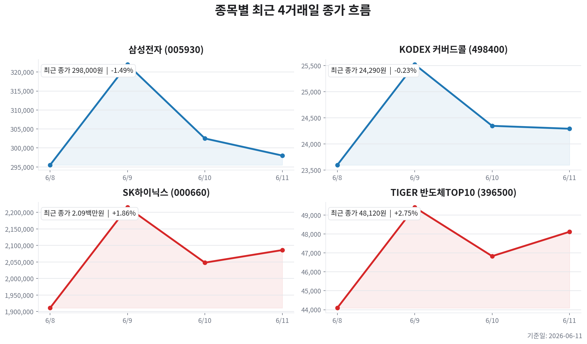

TIGER 반도체TOP10
- 09:27 | 파이낸셜뉴스 반도체 오르면 더 따라간다…TIGER 커버드콜, 월 분배금 215원 지급 - 파이낸셜뉴스
| 종목 | 티커 | 기준 가격 | 전 거래일 종가 | 등락 | 변동률 |
|---|---|---|---|---|---|
| TIGER 반도체TOP10 | 396500 | 48,120원 | 46,830원 | +1,290원 | +2.75% |
| KODEX 200타겟위클리커버드콜 | 498400 | 24,290원 | 24,345원 | -55원 | -0.23% |
| 삼성전자 | 005930 | 298,000원 | 302,500원 | -4,500원 | -1.49% |
| SK하이닉스 | 000660 | 2,086,000원 | 2,048,000원 | +38,000원 | +1.86% |



현재 메모리 사이클은 공급 부족 - 가격 상승 - 실적 폭증 - 주가 상승 구간에 있으며, 동시에 CAPEX 확대와 밸류에이션 피크아웃 리스크가 같이 켜진 중후반부 진입 국면입니다.
투자 결론은 “추세 추종은 유효하지만, 신규 진입은 가격 눌림·외국인 매도 완화·금리 안정 확인 후 분할 접근”입니다.
오늘자 뉴스 0건
이 파일은 자동 생성 결과입니다. 투자 판단 전 원문 뉴스와 실시간 호가를 다시 확인하세요.